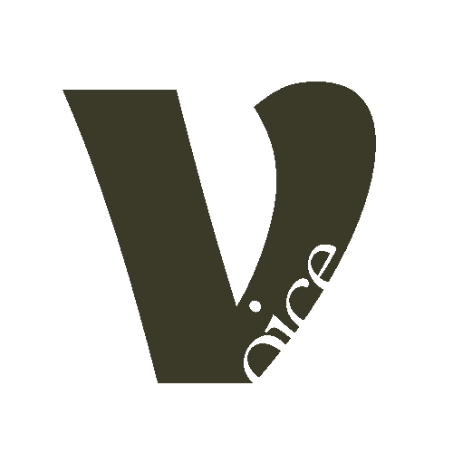

Uma comunidade de mulheres que crescem com Deus enquanto destravam o inglês, de forma leve, com método e com uma mentora conduzindo cada passo. Em cerca de 30 minutos por dia.
Trava na hora de falar: dá o branco e a vergonha vem junto.
Começa o devocional animada e, poucos dias depois, para de novo.
Sente culpa por querer intimidade com Deus e falhar na constância.
Vê o inglês travando sua carreira, suas viagens e o seu chamado.
Já gastou tempo e dinheiro em métodos que nunca destravaram nada.
Cansou de material secular e infantil que não respeita a sua fé.
Segunda é ao vivo. De terça a sexta, uma mentoria guiada nova é liberada a cada dia, sempre conduzindo ao objetivo da semana.
Um versículo bilíngue ancora o tema e o vocabulário da semana.
Ouvir antes de falar. Seu ouvido se acostuma com o inglês do tema.
Entenda a gramática por trás das frases, sem decoreba.
Pratique conversação com o vocabulário da semana e ganhe confiança.
Escreva o que aprendeu. É assim que o conhecimento se consolida.
Um versículo bilíngue ancora o tema e o vocabulário da semana.
Ouvir antes de falar. Seu ouvido se acostuma com o inglês do tema.
Entenda a gramática por trás das frases, sem decoreba.
Pratique conversação com o vocabulário da semana e ganhe confiança.
Escreva o que aprendeu. É assim que o conhecimento se consolida.
Para criar o hábito e praticar todos os dias, com leveza.
O ponto de partida para quem quer começar ou retomar. Cada semana tem um tema conduzido pelo Método VOICE, e tudo fica gravado para você assistir no seu horário.
Para ir além da comunidade: aprofundar o conhecimento do inglês e praticar a conversação.
Em um grupo pequeno e no seu nível, a mentora aprofunda o conteúdo da semana e conduz a prática de conversação. Você entende mais e coloca o que aprendeu em uso.
Para quem quer um acompanhamento sob medida para o seu objetivo.
Viagem, carreira, ministério ou fluência: a mentoria individual ajusta o conteúdo, o ritmo e o foco ao que você precisa, semana a semana.
Para crescer com intensidade, com tudo trabalhando junto.
Comunidade, grupo e mentoria individual somados. Para quem quer acelerar a evolução com prática, conversa e direcionamento pessoal toda semana.
Desde menina, eu sonhava em falar inglês, mas por muitos anos me senti travada e incapaz de me comunicar. Quando fui morar nos Estados Unidos, percebi que apenas estar imersa no idioma não seria suficiente. Precisei me reinventar: ao cuidar diariamente de uma criança de apenas 2 anos, comecei a aprender da mesma forma que uma criança aprende, ouvindo, repetindo e falando sem medo de errar. Com persistência, deixei de apenas entender o inglês e passei a conversar, pensar e viver no idioma com confiança.
Na Austrália, a minha história ganhou um novo sentido. Foi ali que comecei a caminhar com Deus e a entender que a mesma constância que transformou o meu inglês, agora transformava a minha fé. Aprofundei o meu devocional diário e cresci nas disciplinas espirituais, sempre de forma leve e suave.
Hoje, como mentora de inglês com propósito, eu uno as duas coisas que mudaram a minha vida: o inglês e a fé. Não entrego só conteúdo. Eu conduzo cada mulher pelo mesmo caminho que me transformou, com rotina, constância e direção, através do Método VOICE.
Vagas limitadas por turma e agenda. Fale com a gente para encontrar o seu horário.
Cerca de 30 minutos. Na segunda o devocional é ao vivo. De terça a sexta você recebe uma mentoria nova por dia, para assistir no seu horário.
O devocional de segunda fica gravado, e as mentorias de terça a sexta ficam no acervo enquanto você for assinante.
Sim. Tudo é bilíngue, em português e inglês, e foi pensado para quem começa do zero.
A Comunidade Voice é a base: devocional ao vivo, mentorias guiadas e comunidade. O Voice Groups soma aprofundamento e conversação ao vivo em turma. O Voice One soma mentoria individual. O Voice Trinity reúne tudo.
Cobrança mensal recorrente no cartão de crédito, com vencimento todo dia 10. Se você entrar em outra data, o primeiro valor é proporcional até o dia 10 seguinte.
Todos os planos têm fidelidade de 3 mensalidades completas, sem multa. Depois disso, a renovação é mês a mês e você cancela quando quiser, pelo WhatsApp oficial ou pelo e-mail contato@comunidadevoice.com.br.
Sim. São 30 dias por ano, 15 no verão e 15 no inverno. Nesse período não há encontros ao vivo, e o conteúdo continua disponível em formato gravado.
Assim que o pagamento é confirmado, seu acesso à plataforma é liberado.
Sim, a comunidade é exclusiva para mulheres.
O que faltou foi direção e constância, nunca capacidade sua. Aqui você é conduzida semana a semana.
Você recebe inglês, devocional, mentoria e comunidade num só lugar, toda semana, por um valor que cabe no seu mês.
